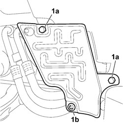

7055B66 ENGINE COMPARTMENT DUST COVER IN RIGHT FRONT WHEEL ARCH - R.R.
- Path
- Procedures > 70 FITTINGS > 7055 MOULDINGS AND PROTECTION > 7055B EXTERIOR PROTECTIONS > 7055B66 ENGINE COMPARTMENT DUST COVER IN RIGHT FRONT WHEEL ARCH - R.R.
- Kind
- repair procedure (removal / refitting; the operation number is the code)
- Applies to
- all engines; all production periods
- Interactive page
- https://sloeber94.github.io/elrnDB-fCrm/en/#/194001181
Applies to: all engines; all production periods
 Removing
Removing
 Refitting
RefittingOp. 4450B04 RIGHT FRONT WHEEL - R.R
1. Undo the two hexagonal head fixing bolts (1a) and the bolt (1b) securing the engine compartment dust shield.
- Remove the engine compartment dust shield from the vehicle.

Applies to: all engines; all production periods
Refitting
Removing- Check that the engine compartment dust shield is not damaged.
Topics linked from this page (1)
Topics that link to this page (60)
- 1004B10 POWER UNIT WITH MANUAL GEARBOX - R.R
- 1004B14 POWER UNIT WITH AUTOMATIC TRANSMISSION R + R
- 1016C10 SINGLE CYLINDER HEAD - R.R. AND REPLACE GASKET
- 1020A20 CRANKCASE OIL SUMP - R.R CLEAN SURFACES FOR SEALANT APPLICATION
- 1020D10 FRONT CRANKSHAFT OIL SEAL COVER - R + R AND REPLACE SEALS WITH TIMING BELT REMOVED
- 1020D14 FRONT CRANKSHAFT OIL SEAL COVER - R.R AND REPLACE SEALS FOR VERSIONS WITH OIL PUMP ON CRANKSHAFT, TIMING SIDE
- 1020D18 FRONT CRANKSHAFT COVER OIL SEAL - R.R.
- 1020D26 FLYWHEEL SIDE OIL SEAL COVER - R.R AND REPLACE GASKETS
- 1020D38 FLYWHEEL SIDE OIL SEAL - REPLACE
- 1024B10 ENGINE FLYWHEEL - R + R FOR VERSIONS WITH MANUAL GEARBOX
- 1028H10 CONNECTING ROD AND PISTON SET - R.R
- 1032A10 CHAIN GEARS AND TIMING SYSTEM COMPONENTS R R
- 1032A12 TIMING SYSTEM DRIVE CHAIN - R.R
- 1032B10 TOOTHED TIMING BELT - R + R FOR TIMING ADJUSTMENT OR REPLACEMENT
- 1032C33 TIMING SYSTEM FIXED HYDRAULIC TENSIONER - R R
- 1032C41 TIMING SYSTEM FIXED CHAIN TENSIONER PAD R R
- 1032C42 TIMING BELT TENSIONER SUPPORT - R.R
- 1036B10 OVERHEAD CAMSHAFT IN CYLINDER HEAD - R.R ON VEHICLE
- 1036L10 CAMSHAFTS IN CAMSHAFT HOUSING - R.R. - INCLUDES CAMSHAFT HOUSING REPLACEMENT IF NECESSARY
- 1036L30 FRONT OIL SEAL FOR CAMSHAFT IN CAMSHAFT HOUSING - REPLACE
- 1060E10 DIESEL INJECTION PRESSURE PUMP - R.R.
- 1060E30 PRESSURE PUMP DRIVE PULLEY - R.R.
- 1060E40 PRESSURE PUMP SUPPORT - R.R.
- 1060G80 DIESEL ELECTRONIC INJECTION CONTROL UNIT - .R
- 1060G90 SYSTEM CABLE LOOM - R.R.
- 1072B10 INLET MANIFOLD - R + R AND REPLACE SEAL
- 1084A40 ENGINE OIL LEVEL SENSOR - R + R
- 1084A42 ENGINE OIL PRESSURE WARNING LIGHT SWITCH - R + R
- 1084B26 ENGINE OIL INTAKE DUCT - R.R
- 1084B45 TIMING CHAIN LUBRICATION NOZZLE - R.R
- 1084C38 ENGINE OIL DELIVERY AND RETURN PIPES TO COOLING RADIATOR - R + R
- 1088C10 WATER PUMP - R + R
- 1088C21 <x>WATER PUMP DRIVE GEAR - R&R</x>
- 1092A10 CRANKSHAFT PULLEY - R + R
- 1092B91 WATER PUMP BALANCING SHAFT DRIVE CHAIN GEARS AND COMPONENTS R R
- 1092B92 WATER PUMP /BALANCING SHAFT DRIVE CHAIN HYDRAULIC TENSIONER R R
- 1092B93 WATER PUMP /BALANCING SHAFT DRIVE CHAIN TENSIONER PADS R R
- 1092G10 SINGLE ENGINE BELT - R.R
- 1092G14 ENGINE COMPONENT SINGLE BELT MOVING TENSIONER - R + R
- 1092G20 ENGINE COMPONENT SINGLE BELT FIXED TENSIONER - ONE - R + R
- 1092D10 AIR CONDITIONER COMPRESSOR DRIVE BELT - R + R
- 1092D20 AIR CONDITIONER COMPRESSOR BELT MOBILE TENSIONER - R R
- 1810A20 CLUTCH - R + R
- 1820B30 CLUTCH HYDRAULIC ACTUATOR - R.R.
- 2110A10 MANUAL GEARBOX AND DIFFERENTIAL - R + R
- 3330D03 SERVO BRAKE / BRAKE PUMP ASSEMBLY - R.R. FOR RIGHT DRIVE VERSIONS
- 3340B56 RIGID PIPE FROM HYDRAULIC CONTROL UNIT TO RIGHT FRONT BRAKE - R.R.
- 3340B62 RIGID PIPE (ONE), LEFT OR RIGHT, FROM HYDRAULIC CONTROL UNIT WITH PIPE CONNECTOR TO REAR BRAKES - R.R.
- 4130B25 POWER STEERING PUMP ASSEMBLY R R FOR VERSIONS WITH AIR CONDITIONER
- 4130B32 POWER STEERING PUMP SUPPORT - R R
- 4130B40 SUPPLY PIPE FROM PUMP TO POWER STEERING BOX - R.R.
- 4130B42 RETURN PIPE FROM POWER STEERING BOX TO POWER STEERING FLUID RESEVIOR - R.R.
- 4410D10 FRONT SUSPENSION FRAME - R+R
- 4450B92 FRONT TYRES PRESSURE TRANSMITTER, (ONE) LH OR RH - R R
- 5040A20 AIR CONDITIONING COMPRESSOR - R+R - INCLUDES FLUID LEVEL CHECK AND TOP UP IF NECESSARY
- 5040A24 AIR CONDITIONING COMPRESSOR - PARTIALLY R.R. FROM THE ENGINE WITHOUT DISCONNECTING THE PIPES
- 5040A26 AIR CONDITIONING COMPRESSOR SUPPORT - R.R.
- 5530A10 ALTERNATOR - R+R
- 5530A30 ALTERNATOR PULLEY OR FAN - R+R WITH ALTERNATOR REMOVED
- 7055B91 RIGHT FRONT WHEEL ARCH LINER - R.R.